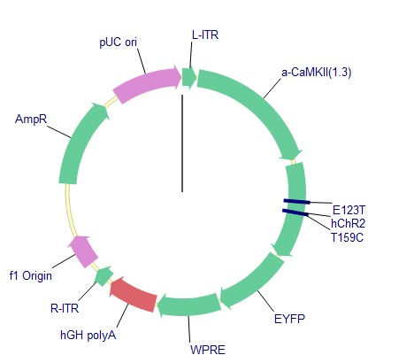
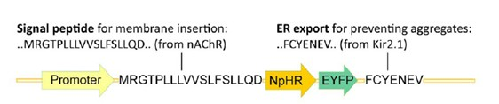
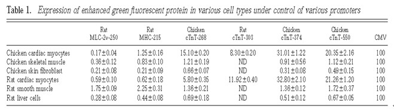
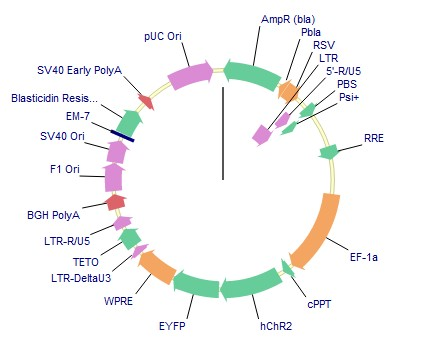
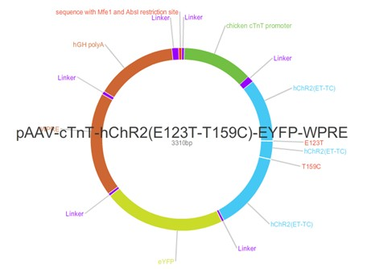

Background:
According to the website of Stanford U(http://www.stanford.edu/group/dlab/optogenetics/), there is a detailed sequence mentioned in the qualifying examination. The original form is pAAV-CaMKII-hChR2 (E123T/T159C)-EYFP, which is showed in Figure 1.
Figure 1. Generic AAV construct of hChR2(E123T/T159C).
Question1: Whether we need ER signal sequence?
For NpHR, researches have show that the sequence is necessary[1, 2].Figure 2 showed the eNpHR’s structure. It said, according to [1], ’ We screened a number of different putative modulators of membrane trafficking and identified a combination of two motifs, an N-terminal signal peptide and a C-terminal ER export sequence,’ However, it seems that hCHR2 have some functions like this: ‘we first attempted to regulate distribution of the NpHR protein within the cell by using signal peptides from either ChR2’, and from the Stanford website it seems that all ChR2 sequence does not need ER signal sequence to improve its transportation properties.
Figure 2. Primary structure of the selected construct showing addition of the N-terminal signal peptide derived from nAChR and the C-terminal ER export signal derived from Kir2.
Almost eNpHR structure makes use of such signal peptide, but whether it is necessary or better for ChR2 is under discussion.
- Gradinaru, V., K.R. Thompson, and K. Deisseroth, eNpHR: a Natronomonas halorhodopsin enhanced for optogenetic applications. Brain Cell Biol, 2008. 36(1-4): p. 129-39.
- Kaneda, K., et al., Selective optical control of synaptic transmission in the subcortical visual pathway by activation of viral vector-expressed halorhodopsin. PLoS One, 2011. 6(4): p. e18452.
- Ma, H., et al., Cell-specific expression of SERCA, the exogenous Ca2+ transport ATPase, in cardiac myocytes. Am J Physiol Cell Physiol, 2004. 286(3): p. C556-64.
- Prasad, K.M., et al., Robust cardiomyocyte-specific gene expression following systemic injection of AAV: in vivo gene delivery follows a Poisson distribution. Gene Ther, 2011. 18(1): p. 43-52.
- Prasad, K.M., et al., A single direct injection into the left ventricular wall of an adeno-associated virus 9 (AAV9) vector expressing extracellular superoxide dismutase from the cardiac troponin-T promoter protects mice against myocardial infarction. J Gene Med, 2011. 13(6): p. 333-41.
- Pulicherla, N., et al., Engineering liver-detargeted AAV9 vectors for cardiac and musculoskeletal gene transfer. Mol Ther, 2011. 19(6): p. 1070-8.
- Abilez, O.J., et al., Multiscale Computational Models for Optogenetic Control of Cardiac Function. Biophys J, 2011. 101(6): p. 1326-1334.
- Gunaydin, L. A., O. Yizhar, ., P. Hegemann. 2010. Ultrafast optogenetic control. Nat. Neurosci. 13:387–392.

Question2: Chicken cTnT promoter or Rat cTnt promoter?
For expression specificity, both of the promoters are acceptable. However, chicken cTNT promoter, especially cTnT-374 is high expressed[3]. The result is obvious, showed in Table 1.
However, this comparison, in my point of view, is limited. Only one research has report this comparison report, constructing one promoter with only one protein (EGFP) or cDNA, which cannot prove the true efficiency of this promoter. My suggestion is to compare chicken 374 and rat 303 in the experiment.
3.Ma, H., et al., Cell-specific expression of SERCA, the exogenous Ca2+ transport ATPase, in cardiac myocytes. Am J Physiol Cell Physiol, 2004. 286(3): p. C556-64.
Question3:how many AAV types should we compare with?
According to the qualified exam, it shows that people have showed AAV9 is best, which AAV8 follows with [4]. The latest paper have strong proof that AAV9 and AAV8 is best expressed and specific under nTnT promoter[5]. In my point of view, I think we should compare the efficiency of AAV9 and AAV8 to determine the best vector. Other types, just many researches proclaimed, are not as good as these two vectors.>
Moreove, recently one research showed that one type of AAV9 is better, which said ‘Fluorescence microscopy of fixed tissue sections confirms that AAV9.45 is cardiac- and skeletal muscle-tropic, while being efficiently detargeted from the liver. In contrast, AAV9 vectors demonstrate robust transduction in all three tissue types as reported previously.’[6]
4.Prasad, K.M., et al., Robust cardiomyocyte-specific gene expression following systemic injection of AAV: in vivo gene delivery follows a Poisson distribution. Gene Ther, 2011. 18(1): p. 43-52.
5. Prasad, K.M., et al., A single direct injection into the left ventricular wall of an adeno-associated virus 9 (AAV9) vector expressing extracellular superoxide dismutase from the cardiac troponin-T promoter protects mice against myocardial infarction. J Gene Med, 2011. 13(6): p. 333-41.
6. Pulicherla, N., et al., Engineering liver-detargeted AAV9 vectors for cardiac and musculoskeletal gene transfer. Mol Ther, 2011. 19(6): p. 1070-8
Question4： Are there any other virus vectors we could try?
The answer may be yes. A new report about the optogenetic cardiac stem cell study shows that the lentiviral vector is also useful due to its relatively mature structure of the vector[7]. In this study pLenti-EF1a-ChR2-eYFP-WPRE (pLECYT) is used into the human embryonic stem cells, and the result shows that the gene is expressed safely and stably. Then it is suggested that ChETA is better because it provides high-fidelity optical control of spiking at high frequencies and eliminates plateau potentials during continued stimulation[8]. Below is the vector they use. The details of this vector are needed to study. The map is from the website of Stanford U (http://www.stanford.edu/group/dlab/optogenetics/).
In this study the ChR2 is also optimized. The channelrhodopsin-2 (ChR2) variant described here was optimized for mammalian expression by truncating the native sequence from 2241 basepair(bp) to 933 bp, by changing the native histidine (H) codon (CAC) to the arginine (R) codon (CGC) coding for protein residue 134 of ChR2 (H134R), and by changing its gene’s codon usage to conform to human codon usage distribution. (It is related to protein biochemistry. This is needed to be studied to know the reason).
Attachment: the design of Steven’s vector (without ITRs, just expression sequences)
Steven does not use ITR sequence due to high cost. Instead, he replaced it with Mfe1&Absl restriction site. It needs to be discussed. Another thing is about the cTNT promoter sequence. Steven said he found it in a paper in 1980s and Blasted it in the internet. It may be ceritified, if possible. The AAV vector could obtained from the gene 2.0, yet I have no idea whether they have AAV mutation type like AAV 9.45. If Steven claims that he decide the right nucleic acid, I think try this vector directly is not a bad idea.